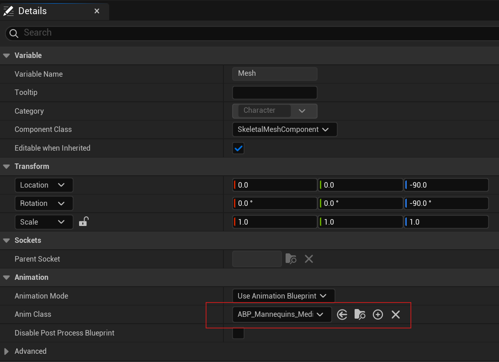

MediaPipe 动画蓝图¶
概述¶
MediaPipeAnimInstance 类作为 MediaPipe4U 动作捕捉的动画蓝图基类，从 MediaPipeHolisticComponent 组件中持续获取 mediapipe 数据，
并将这些数据应用到各个 MediaPipe4U 相关的动画蓝图节点。
当一个骨骼网格体 (USkeletalMeshComponent) 的 Anim Class 设置为一个继承自 MediaPipeAnimInstance 的动画蓝图类型时，这个骨骼网格体将被 MediaPipe4U 驱动。

MediaPipeAnimInstance存在于MediaPipe4UMotion插件中，是动作捕捉的核心元件。
属性¶
MediaPipeAnimInstance 上有很多控制动画行为的属性。
你可以在动画蓝图资产编辑器视口的打开
类定义（Class Defaults），并在右侧的细节面板中编辑这些属性

| 属性 | 类型 | 默认数 | 说明 |
|---|---|---|---|
| Mode | enum | 动画使用全身/半身模式 | |
| ResetOnPipelineStopped | bool | true | 是否在停止捕获 (例如: MediaPipeHolisticComponent::Stop 被调用时) 时充值到初始姿态。 |
| SolveFingers | bool | true | 是否启用手指算解，手指捕捉被启用回根据手指位置计算手腕翻转，但要求视频能够看清手指。 |
| SolveHeadFromFaceMesh | bool | false | 是否使用面部地标计算头部旋转，这要求视频能够看清面部，并且动画蓝图中存在 MediaPipeHeadSolver 节点。 |
| SolveLocation | bool | true | 是否启用位置（位移）算解，当为 true 时还要求动画蓝图中存在 MediaPipeLocationSolver 节点 |
| MinPoseScoreThresh | float | 0.5 | 姿态地标（关键点）的置信度阈值，只有关键点可信度大于这个值，才使用该地标的位置计算关节旋转信息。 |
| MinHandScoreThresh | float | 0.5 | 手部地标（关键点）的置信度阈值，只有关键点可信度大于这个值，才使用该地标的位置计算关节旋转信息。 |
| MinFaceScoreThresh | float | 0.5 | 面部地标（关键点）的置信度阈值，只有关键点可信度大于这个值，才使用该地标计算头部旋转。 仅当 SolveHeadFromFaceMesh 时此属性才有效。 |
| TwistCorrectionEnabled | bool | false | 是否进行关节扭曲矫正， 关于扭曲矫正详细信息，请阅读[扭曲矫正]部分文档。 |
| AutoConnectToMediaPipe | bool | Enabled | 自动连接 MediaPipe 的行为控制。 当值为 Disabled 时， 动画蓝图并不会自动连接到 mediapie 获取数据，需要你手动调用 ConnectToMediaPipe 相关函数进行连接。 |
| LiveLinkSubject | FLiveLinkSubjectName | MediaPipe4U | 这个属性只是为了方便集成 LiveLink，MediaPipe4U 并未使用该属性， 方便你的蓝图编辑器中通过这个属性用于切换 LiveLink 连接。 |
| LiveLinkEnabled | bool | true | 这个属性只是为了方便集成 LiveLink，MediaPipe4U 并未使用该属性， 方便你的蓝图编辑器中通过这个属性用于控制是否启用 LiveLink 连接。 |
| bDebugDraw | bool | false | 是否在骨骼网格体上绘制一些调试信息。 |
| CalibrationCountdownSeconds | float | 5 | 校准倒即使，表示 xxxx 秒后开始校准，相信信息请阅读校准部分文档。 |
| CalibrationPolicy | enum | Manual | 校准策略: CountdownOnStart: MediaPipe 开始时进行倒计时；Manual: 不使用倒计时，手动调用校准函数来校准。 |
| BonePreset | enum | UE5 | 骨骼预设, 使用内置的骨骼预设或自定义骨骼预设。 |
| BoneRemap | MediaPipeRemapAsset 资产 | null | 当 BonePreset 为 Custom 时， 将从这个属性读取骨骼映射信息， 以完整骨骼网格体骨骼倒 mediapipe 骨骼的映射。 |
| PoseAsset | PoseAsset 资产 | null |
使用一个 PoseAsset 来矫正初始姿态，比如 UnrealEngine5 默认角色初始姿态手指是弯曲的，你可以在这个 PoseAsset 中拉直它来解决这个问题。 |
| PoseForInit | Name | None | 表示从 PoseAsset 属性设置的 PoaseAsset 资产中查找初始姿态的名称（曲线名称）。 |
蓝图函数¶
| 函数 | 说明 |
|---|---|
| IsMediaPipeRunning | 返回一个值，指示 MediaPipe 算解是否在运行。 |
| IsPaused | 返回一个值，指示 MediaPipe 算解是否被暂停。 |
| Pause | 暂停 MediaPipe 算解。 |
| Resume | 从暂停状态中恢复 MediaPipe 算解。 |
| ConnectToMediaPipeInLevel | 将动画蓝图（ 1. MediaPipeAnimInstance）连接(1)到场景中的 MediaPipeHolisticComponent。 连接是指动画蓝图会从目标中获取 mediapipe 数用以算解。 连接是指动画蓝图会从目标中获取 mediapipe 数用以算解。 |
| ConnectToMediaPipe | 将动画蓝图（ 1. MediaPipeAnimInstance）连接(1)到指定的 MediaPipeHolisticComponent。 连接是指动画蓝图会从目标中获取 mediapipe 数用以算解。 |
| IsMediaPipeConnected | 判断当前动画蓝图是否已经连接到 MediaPipeHolisticComponent 。 |
| DisconnectFromMediaPipe | 断开与 MediaPipeHolisticComponent 的连接 。 |
| LoadBoneSettingsFromJsonContent | 从 Json 格式的字符串中加载自定义骨骼映射（BoneRemap）。 |
| LoadBoneSettingsFromJsonFile | 从 Json 文件中中加载自定义骨骼映射（BoneRemap）。 |
| CalibratePose | 校准姿态。 |
| UnCalibratePose | 重置已经校准姿态。 |
| CalibrateLocation | 校准位置。 |
| UnCalibratePose | 重置已经校准的位置。 |
| GetCalibrationRemainingSeconds | 获取校准倒计时剩余的秒数（读秒）。 |
| StartCalibrationCountdown | 以指定的秒数开始一个校准到计时（倒计时结束时回进行姿态和位置校准）。 |
| CancelCalibrationCountdown | 取消一个已经开始的校准倒计时。 |
| GetSolverFPS | 获取算机器的 FPS， 通常用于度量算解器性能。 |
Warning
只有位置校准完成，动画蓝图中的 MediaPipeLocationSolver 节点才会开始工作。
C++ 函数¶
C++ 函数提供比蓝图函数更底层的功能。
| 函数 | 说明 |
|---|---|
| GetLocationSolver | 获取位置算解器。 |
| GetPoseSolver | 获取姿态算解器。 |
| GetHandsSolver | 获取手部（手指）算解器。 |
| GetHeadSolver | 获取头部算解器。 |
| GetGroundIKSolver | 获取地面 IK 算解器。 |
| LoadBoneSettings | 从一个 C++ 实现的 IBoneSettingsProvider 对象中加载骨骼映射信息。 |